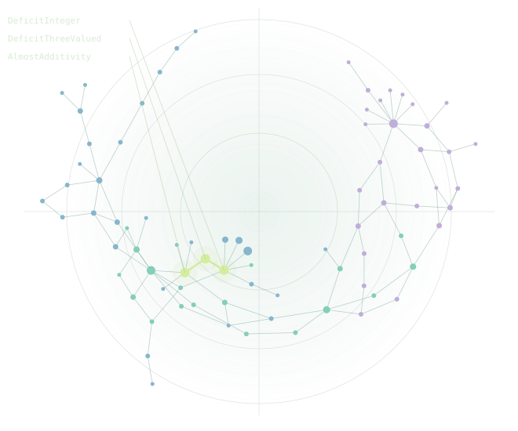

E(q; T) = ker q ∖ ker T
Pairs the current readout q cannot tell apart, although the question T needs them apart.
trureturing formalizes logic the way analytic philosophy reads an argument: define every term, find the relations, then the relations between relations. A proof kernel checks every step.
Solved open problems are how we test that the logic is right. The dependency graph is what the work leaves behind.
a450fbe4
SAIR Mathematics Distillation Challenge, Equational Theories Stage 2: decide whether one magma equation implies another, and prove it with a Lean certificate the judge’s kernel checks. A proof for true, an explicit countermodel for false. No certificate, no point.
Frozen on 26 Augustfive days before the deadline, and never changed.
First attempton every set released after the freeze.
Zero LLM callsa deterministic cascade of proofs and countermodels.
The results came from method, not expertise: exact definitions, machine-checked certificates, and measuring everything.
Team-reported measurements: arXiv:2609.00706 · sair-eqt2-stage2-solver. Official leaderboards are not yet published; no rank or hidden-set result is claimed.
Semigroups, integer sequences, golden-ratio arithmetic.
Quantum states and channels, records of events in time.
What a concept separates: negation, interpretation, communication.
Rights, moral luck, deliberation, governance, trust.
Make every concept and assumption explicit, so nothing hides in the wording.
Prove what follows, and exhibit what does not with a counterexample.
Find the same structure across carriers, then apply the method to definitions and methods themselves.
“If machine learning is a black box of logic, trureturing is a white box.”
940 Lean modules formalize concepts, knowledge and norms, 916 of them frozen; 294 cover quantum physics. Theory volumes carry the method further, into philosophy and religion.
Hard problems rarely need a longer path through known theorems. They need a new definition that separates what was mixed together. The object does not change; the structure that describes it does.
E(q; T) = ker q ∖ ker T
Pairs the current readout q cannot tell apart, although the question T needs them apart.
E(q ∨ d; T) = E(q; T) ∩ ker d
Adding a definition d cuts the open set by intersection. When nothing escapes, the question is decided.
E ∩ KΓ ≠ ∅
If what remains is invisible to every available definition, more search cannot succeed. Change the language.
Where did information escape?
How is that escape addressed?
What new information emerges?
Where does information continue to escape?
Definition-Escape Completion Theory (DECT) in the theory volumes; Lean: EscapePairs, ExactRate, StructuralNovelty, LayerChain. The escape judge is under development: its findings are warnings, not admission gates.
A Bell state and an equal classical mixture of 00 and 11 have exactly the same reduced state on each qubit. They are different states.
(m² − 1)(n² − 1)
of m²n² − 1
D5/S3/Quantum/Entanglement/LocalMarginalCorrelationBlindSpot.lean · frozen statement sha256:39ac94c8… · holds for all finite dimensions with m × n > 1.
A new theorem that only instantiates, projects or repackages what is already proved is bind-only: it creates no new distinction, so it earns no place in the library.
Example: a general theorem restated at n = 60 is closed by citing the general theorem.
Example: a five-element semigroup no existing result provides.
The expected new fact is pre-registered, so it cannot be relabeled afterwards. One exception: settling a named, published open problem counts by itself, with its verbatim source registered first.
DeficitIntegerreachable downstream modules
across five recorded observations
“The last line of the ledger is always the first line of the next round.”
Five sampled Atlas observations ending at a450fbe4; module-import reach from DeficitInteger.
A real neighbourhood of the library. Every edge is a recorded module import.
Arrows show recorded module imports, not theorem-use counts or a measure of authorship. Snapshot a450fbe4.
The rules every agent reasons by are themselves frozen theorems: appending to the record never changes an old settlement; a lookup table fits the past with zero loss yet commits to no prediction; more budget cannot remove a blind residual.
No gate waits for a person to decide right or wrong. People choose what is worth asking.
It fails at n = 1121626023352383, where it is off by one.
E(n) · 2³ⁿ⁻³ is an integer (OEIS A309221).
A counterexample on ℤ₃₀ (arXiv:2608.10643, Conj. 4.1).
The least contraction coefficient over a fixed classical channel is |a − f|.
Catalogue of 14 September 2026; repository counts at dev fcd9b82a4. Each example is merged and frozen. Counts measure output, not novelty.
Araújo et al., “Complete Mappings of Semigroups”, Problem 15.5.
The recorded negative answer connects the quoted definitions, an exact Lean statement and a finite counterexample.
result : ¬ claim| × | w0 | w1 | w2 | w3 | w4 |
|---|---|---|---|---|---|
| w0 | w0 | w1 | w2 | w3 | w4 |
| w1 | w1 | w0 | w2 | w3 | w4 |
| w2 | w2 | w2 | w2 | w3 | w4 |
| w3 | w3 | w3 | w3 | w4 | w2 |
| w4 | w4 | w4 | w4 | w2 | w3 |
PR #9405, merged 21 September 2026. Bind-only in proof shape; admitted because it settles a named, pre-registered open problem.
Correctness does not depend on who you are. Bring an idea; an agent carries the formal language; the harness checks the logic; the result is attributed and stays.
Turn an intuition or a quoted claim into an exact statement.
Test examples, find the counterexample, name what cannot be distinguished.
Reuse what is proved, and add the step that no wrapper could.
Your node, its dependencies and its reviewers stay public.
What people learn along the way: to define exactly, to find what is known, to see where an argument escapes.
Explore contribution paths ↗A proposed four-week pilot: one topic, one agreed open model, a small community.
Agree on tasks, participants, model version, resources and evaluation criteria.
Define, test and formalize with support. Review what is admitted.
Publish agreed artifacts and findings, including difficulties and unresolved questions.
ParticipationFirst useful contributions and help needed.
UnderstandingExplain assumptions and work through a nearby example.
ReliabilityKernel outcomes and source-fidelity review.
CostModel, compute and reviewer time per useful contribution.
Proposed scope and timing for discussion. Training use requires explicit consent and agreed terms.
A first working session can choose the topic, the model and one coordinator on each side.
The harness and its method, the information-escape framework, working frontier pipelines and engineering support.
Mathematical priorities, participants, open-model access, evaluation and contribution rights.
Prepared for discussion with the SAIR Open Math Model initiative.
Frozen solver, hash-bound results, claims ledger and the paper arXiv:2609.00706.
The four questions, readouts, unique captures and escape rate, with links to the Lean sources.
Bind-only and escape witnesses, frozen truth, honest status and the admission gates.
Source correspondence, admission basis, verification results and frozen identity.
The Open Math Model initiative and its invitation to partners.
A checked proof establishes its exact formal statement under its assumptions. Source fidelity and significance still require review.
The current Pages graph records module imports and separately labeled document or affinity relations. Git and PRs supply contribution records.
Existing results receive credit. The contribution rules discourage wrappers and include an explicit exception for named external open-problem resolutions.
Repository-produced Lean code: Apache-2.0. Text: CC BY 4.0. Data: CC0. Third-party terms remain applicable. Any pilot training use needs explicit consent and agreed terms.